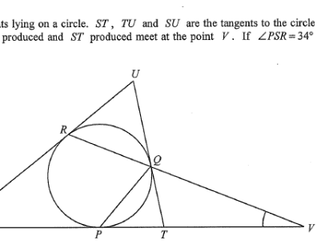

Circle Tangents ST / SU / TU Chord RQ & RV Chord PR / PQ Points P, Q, R, S, T, U, V
Question
In the figure, P, Q and R are points lying on a circle.
ST, TU and SU are the tangents to the circle at P, Q
and R respectively. RQ produced and ST produced meet at the point V.
If $\angle PSR = 34^\circ$ and $\angle QPT = 46^\circ$, then $\angle PVQ =$
A. 17°
B. 22°
C. 27°
D. 28°

Figure (original exam diagram)
Step-by-step solution
STEP 1 · Let the unknown angle be x
Let $\angle PVQ = x$.
$V$ lies on $ST$ produced and on $RQ$ produced, so $V$, $P$, $T$, $S$ are collinear
on the tangent line $ST$, and $V$, $R$, $Q$ are collinear on the chord line.
STEP 2 · Exterior angle of triangle RSV
In $\triangle RSV$, side $RQ$ is produced to $V$.
Exterior Angle of a Triangle\(\angle QRU=\angle PSR+\angle PVQ\)In \(\triangle RSV\) the side \(RQ\) is produced to \(V\), so the exterior angle is the sum of the two interior opposite angles.
$$
\angle QRU = \angle PSR + \angle PVQ = 34^\circ + x
\quad\text{(ext. } \angle \text{ of } \triangle)
$$
Here $\angle QRU$ is the exterior angle of $\triangle RSV$ at $R$
(since $U$, $R$, $S$ are on the same straight side of the tangent at $R$).
STEP 3 · Angles in the alternate segment
Tangent–Chord Angle\(\angle QPR=\angle QRU\)The angle between the tangent at \(R\) and the chord \(RQ\) equals the angle in the alternate segment.
Since $SR$ is the tangent at $R$ and $RQ$ is a chord,
by the tangent–chord angle (alternate segment) theorem:
$$
\angle QPR = \angle QRU = 34^\circ + x
$$
Similarly, since $TP$ is the tangent at $P$ and $PQ$ is a chord:
$$
\angle PRQ = \angle QPT = 46^\circ
$$
STEP 4 · Angle sum of triangle PRV
In $\triangle PRV$:
$$
\angle PRQ + \angle RPV + \angle PVQ = 180^\circ
\quad(\angle \text{ sum of } \triangle)
$$
Note $\angle RPV = \angle RPS + \angle SPV$, and since $P$ lies on $ST$,
$\angle RPV = 34^\circ + x + 46^\circ$ is not directly used — instead we use
$\angle RPV = \angle QPR + \angle QPT$ because $Q$ lies inside $\triangle PRV$
on the line $QV$. Hence
$$
46^\circ + \big[(34^\circ + x) + 46^\circ\big] + x = 180^\circ
$$
STEP 5 · Solve for x
$$
\begin{aligned}
46^\circ + 34^\circ + x + 46^\circ + x &= 180^\circ\\
126^\circ + 2x &= 180^\circ\\
2x &= 54^\circ\\
x &= 27^\circ
\end{aligned}
$$
Therefore $\angle PVQ = 27^\circ$, which is option C.
Exam tip: The key is to spot two alternate-segment (tangent–chord) angles:
$\angle QPR = \angle QRU$ and $\angle PRQ = \angle QPT$. Then triangle $PRV$ gives one equation
in $x$. The condition that $TU$ is tangent at $Q$ is not needed.
FINAL ANSWER
C. 27°
PRACTICESimilar question — try it yourself
Question. In the figure, \(P\), \(Q\) and \(R\) are points on a circle. \(ST\), \(TU\) and \(SU\) are the tangents to the circle at \(P\), \(Q\) and \(R\) respectively. \(RQ\) produced and \(ST\) produced meet at \(V\). If \(\angle PSR=40^\circ\) and \(\angle QPT=50^\circ\), find \(\angle PVQ\).
Show the worked solution
Step 1. Let \(\angle PVQ=x\). In \(\triangle RSV\), the exterior angle at \(R\) gives \(\angle QRU=\angle PSR+\angle PVQ=40^\circ+x\).
Step 2. By the tangent\u2013chord angle theorem, \(\angle QPR=\angle QRU=40^\circ+x\) (tangent \(SR\), chord \(RQ\)).
Step 3. Again by the tangent\u2013chord angle theorem with tangent \(TP\) and chord \(PQ\): \(\angle PRQ=\angle QPT=50^\circ\).
Step 4. Angle sum of \(\triangle PRV\): \(50^\circ+\left[(40^\circ+x)+50^\circ\right]+x=180^\circ\).
Step 5. \(140^\circ+2x=180^\circ\), so \(2x=40^\circ\) and \(x=20^\circ\).
Answer: \(\angle PVQ=20^\circ\)
Note: The condition that $TU$ is the tangent to the circle at $Q$ is indeed irrelevant
to the numerical answer.